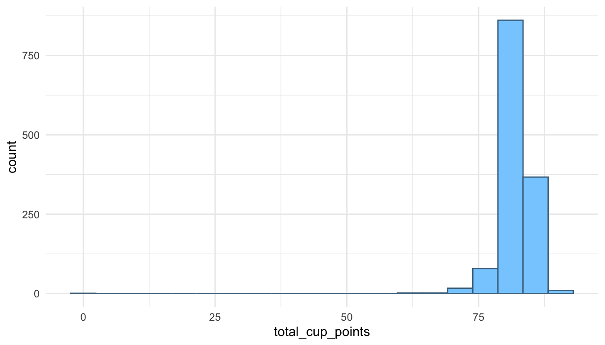
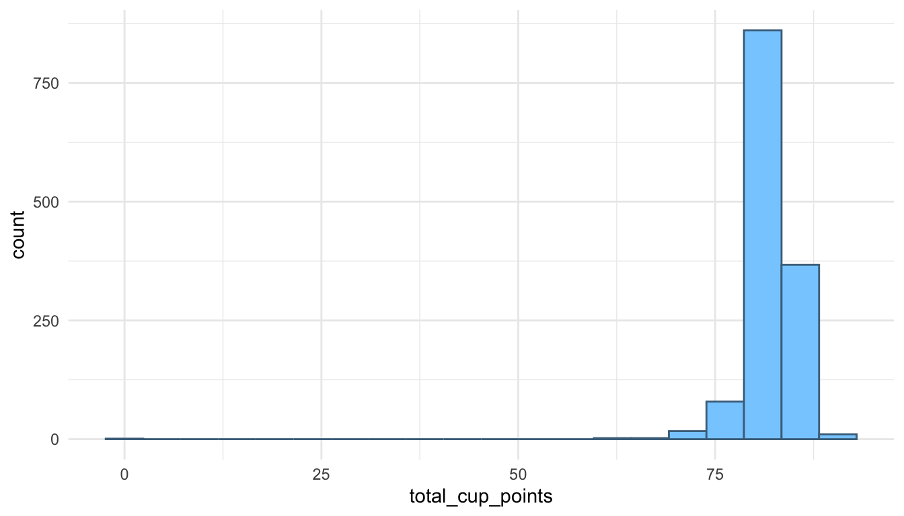
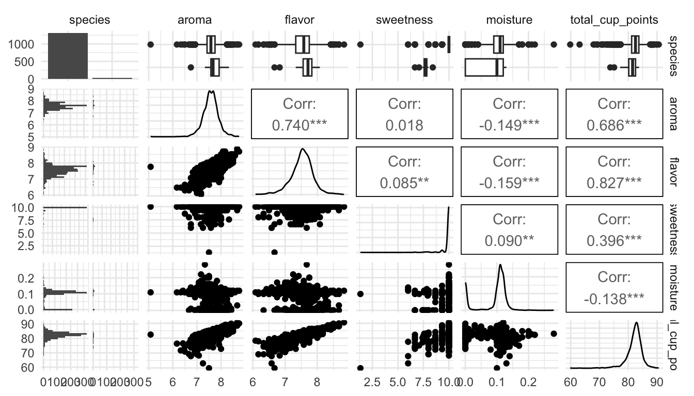
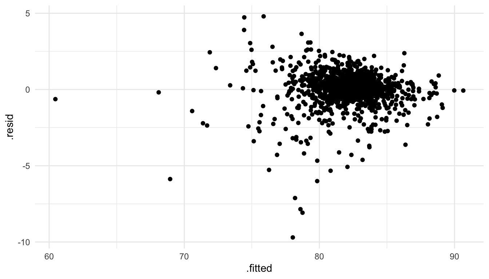

library(tidyverse)
library(here)
theme_set(theme_minimal())
coffee_df <- read_csv(here("data/coffee_ratings.csv"))
ggplot(data = coffee_df, aes(x = total_cup_points)) +
geom_histogram(colour = "skyblue4", fill = "skyblue1", bins = 20)
broom (Class Prep)In this section, we will focus more on a tidy approach to the models that you fit and interpreted in STAT 213.
The functions in the broom package return tibbles with model summary information that we can then use for further analysis, plotting, or presentation. The broom package consists of three primary functions: tidy(), glance(), and augment(), which are described below.
We will use the coffee_ratings data set, which contains observations on ratings of various coffees throughout the world. The data was obtained from the Github account (https://github.com/rfordatascience/tidytuesday/blob/master/data/2020/2020-07-07/readme.md).
A description of each variable in the data set is given below.
total_cup_points, the score of the coffee by a panel of experts (our response variable for this section)species, the species of the coffee bean (Arabica or Robusta)aroma, aroma (smell) gradeflavor, flavor gradeaftertaste, aftertaste gradeacidity, acidity gradebody, body gradebalance, balance gradeuniformity, uniformity gradeclean_cup, clean cup gradesweetness, sweetness grademoisture, moisture gradecategory_one_defects, count of category one defectsquakers, quakerscategory_two_defects, the number of category two defectsIn the examples below, we will consider the multiple linear regression model
\[ Y = \beta_0 + \beta_1 species + \beta_2 aroma + \beta_3 flavor + \beta_4 sweetness + \beta_5 moisture + \epsilon, \]
where \(Y\) is the rating of the coffee (total_cup_points), species is an indicator variable equal to 1 if the species is Robusta and a 0 if the species is Arabica, and \(\epsilon\) are the random errors, which follow the usual assumptions that they are independent and normally distributed with constant variance.
tidy()
tidy() is analagous to summary() for a linear model object. Let’s start by fitting a linear model with lm() with total_cup_points as the response and species, aroma, flavor, sweetness, and moisture as predictors.
Read in the data and make a couple of quick exploratory plots:
library(tidyverse)
library(here)
theme_set(theme_minimal())
coffee_df <- read_csv(here("data/coffee_ratings.csv"))
ggplot(data = coffee_df, aes(x = total_cup_points)) +
geom_histogram(colour = "skyblue4", fill = "skyblue1", bins = 20)
We see from the histogram that there are a couple of coffees that were given ratings of 0: these seem to be data entry errors so we will remove them from the coffee data set before making a pairs plot:
coffee_df <- coffee_df |> filter(total_cup_points > 0)
library(GGally)
ggpairs(coffee_df, columns = c("species", "aroma", "flavor", "sweetness",
"moisture", "total_cup_points"))
What do you see from the pairs plot?
Then, load the broom package (and install it with install.packages("broom")), and fit the model with
In STAT 213, you likely used summary() to look at the model output:
summary(coffee_mod)
#>
#> Call:
#> lm(formula = total_cup_points ~ species + aroma + flavor + sweetness +
#> moisture, data = coffee_df)
#>
#> Residuals:
#> Min 1Q Median 3Q Max
#> -9.7029 -0.3452 0.0907 0.5372 4.7968
#>
#> Coefficients:
#> Estimate Std. Error t value Pr(>|t|)
#> (Intercept) 12.2113 1.0000 12.211 < 2e-16 ***
#> speciesRobusta 2.3953 0.2689 8.906 < 2e-16 ***
#> aroma 1.6508 0.1475 11.192 < 2e-16 ***
#> flavor 5.0066 0.1377 36.350 < 2e-16 ***
#> sweetness 2.0166 0.0700 28.808 < 2e-16 ***
#> moisture -2.0665 0.6591 -3.135 0.00175 **
#> ---
#> Signif. codes: 0 '***' 0.001 '**' 0.01 '*' 0.05 '.' 0.1 ' ' 1
#>
#> Residual standard error: 1.142 on 1332 degrees of freedom
#> Multiple R-squared: 0.82, Adjusted R-squared: 0.8194
#> F-statistic: 1214 on 5 and 1332 DF, p-value: < 2.2e-16However, there are a few inconveniences involving summary(). First, it’s just not that nice to look at: the output isn’t formatted in a way that is easy to look at. Second, it can be challenging to pull items from the summary output with code. For example, if you want to pull the p-value for moisture, you would need to write something like:
summary(coffee_mod)$coefficients["moisture", 4]
#> [1] 0.001753522tidy() is an alternative that puts the model coefficients, standard errors, t-stats, and p-values in a tidy tibble:
tidy(coffee_mod)
#> # A tibble: 6 × 5
#> term estimate std.error statistic p.value
#> <chr> <dbl> <dbl> <dbl> <dbl>
#> 1 (Intercept) 12.2 1.000 12.2 1.39e- 32
#> 2 speciesRobusta 2.40 0.269 8.91 1.69e- 18
#> 3 aroma 1.65 0.147 11.2 7.45e- 28
#> 4 flavor 5.01 0.138 36.4 1.46e-201
#> 5 sweetness 2.02 0.0700 28.8 2.92e-142
#> 6 moisture -2.07 0.659 -3.14 1.75e- 3The advantage of this format of output is that we can now use other tidyverse functions on the output. To pull the p-values,
or, to grab the output for a particular variable of interest:
glance()
glance() puts some model summary statistics into a tidy tibble. For example, if we run
glance(coffee_mod)
#> # A tibble: 1 × 12
#> r.squared adj.r.squared sigma statistic p.value df logLik AIC BIC
#> <dbl> <dbl> <dbl> <dbl> <dbl> <dbl> <dbl> <dbl> <dbl>
#> 1 0.820 0.819 1.14 1214. 0 5 -2073. 4160. 4197.
#> # ℹ 3 more variables: deviance <dbl>, df.residual <int>, nobs <int>you should notice a lot of statistics that you are familiar with from STAT 213, including r.squared, adj.r.squared, sigma (the residual standard error), statistic (the overall F-statistic), AIC, and BIC. We are going to focus mainly on coefficient interpretation in this course, so there is no need to worry if you do not remember exactly what, for example, BIC is.
augment()
augment() is my personal favourite of the three. The function returns a tibble that contains all of the variables used to fit the model appended with commonly used diagnostic statistics like the fitted values (.fitted), cook’s distance (.cooksd), .hat values for leverage, and residuals (.resid).
augment(coffee_mod)
#> # A tibble: 1,338 × 12
#> total_cup_points species aroma flavor sweetness moisture .fitted .resid
#> <dbl> <chr> <dbl> <dbl> <dbl> <dbl> <dbl> <dbl>
#> 1 90.6 Arabica 8.67 8.83 10 0.12 90.7 -0.0702
#> 2 89.9 Arabica 8.75 8.67 10 0.12 90.0 -0.0612
#> 3 89.8 Arabica 8.42 8.5 10 0 88.8 0.917
#> 4 89 Arabica 8.17 8.58 10 0.11 88.6 0.406
#> 5 88.8 Arabica 8.25 8.5 10 0.12 88.3 0.525
#> 6 88.8 Arabica 8.58 8.42 10 0.11 88.5 0.360
#> # ℹ 1,332 more rows
#> # ℹ 4 more variables: .hat <dbl>, .sigma <dbl>, .cooksd <dbl>,
#> # .std.resid <dbl>augment() the data set makes it really easy to do things like:
filter() the data set to examine values with high cook’s distance that might be influentialaugment_df <- augment(coffee_mod)
augment_df |> filter(.cooksd > 0.5)
#> # A tibble: 0 × 12
#> # ℹ 12 variables: total_cup_points <dbl>, species <chr>, aroma <dbl>,
#> # flavor <dbl>, sweetness <dbl>, moisture <dbl>, .fitted <dbl>,
#> # .resid <dbl>, .hat <dbl>, .sigma <dbl>, .cooksd <dbl>, .std.resid <dbl>We see right away that there are not any potentially influential observations (using a Cook’s distance of 0.5 as a cut-off value).
We could also find observations with high leverage
augment_df |> filter(.hat > 0.2)
#> # A tibble: 1 × 12
#> total_cup_points species aroma flavor sweetness moisture .fitted .resid
#> <dbl> <chr> <dbl> <dbl> <dbl> <dbl> <dbl> <dbl>
#> 1 59.8 Arabica 7.5 6.67 1.33 0.1 60.5 -0.632
#> # ℹ 4 more variables: .hat <dbl>, .sigma <dbl>, .cooksd <dbl>,
#> # .std.resid <dbl>or observations that are outliers:
augment_df |> filter(.std.resid > 3 | .std.resid < -3)
#> # A tibble: 25 × 12
#> total_cup_points species aroma flavor sweetness moisture .fitted .resid
#> <dbl> <chr> <dbl> <dbl> <dbl> <dbl> <dbl> <dbl>
#> 1 82.8 Arabica 8.08 8.17 10 0.12 86.4 -3.62
#> 2 82.3 Arabica 7.75 8.08 6.67 0.11 78.7 3.65
#> 3 80.7 Arabica 7.67 7.5 6.67 0 75.9 4.80
#> 4 80 Arabica 7.58 7.75 10 0 83.7 -3.69
#> 5 79.9 Arabica 7.83 7.67 10 0 83.7 -3.78
#> 6 79.2 Arabica 7.17 7.42 6.67 0.1 74.4 4.73
#> # ℹ 19 more rows
#> # ℹ 4 more variables: .hat <dbl>, .sigma <dbl>, .cooksd <dbl>,
#> # .std.resid <dbl>Finally, we can use our ggplot2 skills to construct plots like a residuals versus fitted values plot:
ggplot(data = augment_df,
aes(x = .fitted, y = .resid)) +
geom_point() 
Exercise 1. Examine the penguins data set in the palmerpenguins package:
library(palmerpenguins)
penguins
#> # A tibble: 344 × 8
#> species island bill_length_mm bill_depth_mm flipper_length_mm body_mass_g
#> <fct> <fct> <dbl> <dbl> <int> <int>
#> 1 Adelie Torgers… 39.1 18.7 181 3750
#> 2 Adelie Torgers… 39.5 17.4 186 3800
#> 3 Adelie Torgers… 40.3 18 195 3250
#> 4 Adelie Torgers… NA NA NA NA
#> 5 Adelie Torgers… 36.7 19.3 193 3450
#> 6 Adelie Torgers… 39.3 20.6 190 3650
#> # ℹ 338 more rows
#> # ℹ 2 more variables: sex <fct>, year <int>Fit a linear regression model with body_mass_g as the response variable and species and bill_length_mm as the predictors. Note that penguins with missing values for any of these three variables will be dropped from the analysis.
Exercise 2. Create a table of summary output, including coefficient estimates, standard errors, test statistics, and p-values, using one of the broom functions.
Exercise 3. Use glance() to glance at some of the relevant model statistics.
Exercise 4. Using augment(), create a plot of the residuals vs. the fitted values and evaluate the constant variance assumption.
Exercise 5. Using augment(), check to see if there are any penguins that are influential. Use 0.75 as your cut-off value for Cook’s distance.
The goal of this section is to review intercept and slope coefficient interpretations from STAT 213. Our ultimate goal, in the coming weeks, is to use visualization to make our model coefficient interpretation more clear. We will have a particular focus on interpreting model coefficients from relatively complex models (with interaction terms, for example) for an audience with little statistical background.
We will use an accompanying handout and pen-and-paper to review model coefficient interpretation from STAT 213.